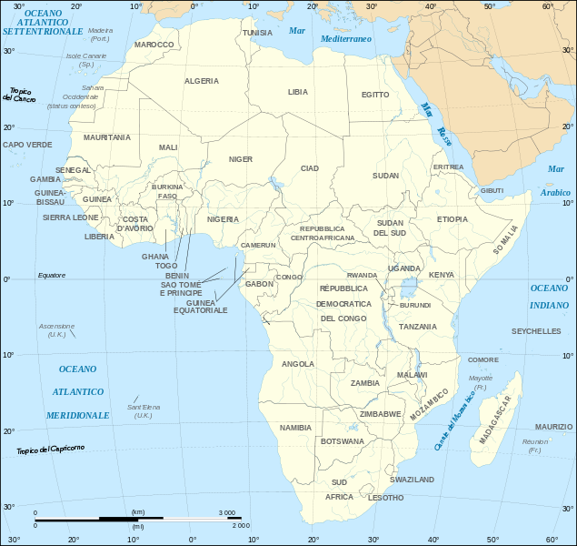

Desktop1
Desktop1

<div>
  <link href="css/stile.css" rel="stylesheet" />
  <div>
    <div class="desktop1-desktop1">
      
      <span class="desktop1-text"><span>I LUV FOOD</span></span>
      
      <span class="desktop1-text02">
        <span>
          <span>colazioni africane</span>
          <br />
          <span></span>
        </span>
      </span>
      
      <span class="desktop1-text07"><span>I LUV FOOD</span></span>
      <span class="desktop1-text09"><span>Seguici su</span></span>
      
      
      
      
      <span class="desktop1-text11">
        <span>
          Una versione sudafricana del porridge che invece dell&apos;avena
          prevede il mais, servito con latte o sciroppo d&apos;acero.
        </span>
      </span>
      
      <span class="desktop1-text13">
        <span>
          I baghrir sono tradizionali pancakes marocchini dai mille buchi
        </span>
      </span>
      
      <span class="desktop1-text15">
        <span>
          Il Weina è un piatto tipico della Nigeria. Può essere farcito con
          carne, verdure a seconda dei gusti di ciascuno.
        </span>
      </span>
      <span class="desktop1-text17">
        <span>
          Il tè alla menta o latay , è un tè prodotto grazie all&apos;infuso di
          acqua bollente su foglie di tè verde e menta.
        </span>
      </span>
      
      
    </div>
  </div>
</div>


